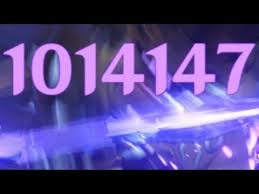

Raiden Shogun adalah karakter di game Genshin Impact yang cukup besar peminatnya. Karakter ini didalam gamenya berperan sebagai dewa di negara Inazuma sekaligus pemimpin negara. Karakter yang berelemen electro ini cukup sakit dan berdamage besar dalam elemental burst nya. Seperti pada gambar!  Berikut cara melakukan damage showcase :
- Hancurkan shield Cryo Reginsive menggunakan Elemental skill bennet.
- Switch karakter ke raiden shogun dan kemudian elemental skill.
- Kemudian switch karakter menggunakan Kazuha ketika lawan terpengaruh electro dan kemudian keluarkan Elemental Burst Kazuha dan Elemental Skill.
- Lalu switch menggunakan Bennett lalu keluarkan elemental burst nya.
- Lalu switch mona dan keluarkan Elemental burst nya.
- Yang terakhir adalah switch karakter raiden shogun dan kemudian keluarkan burst nya dan lihat damage yang akan anda hasilkan.